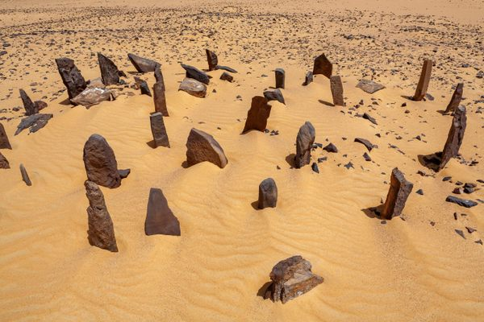
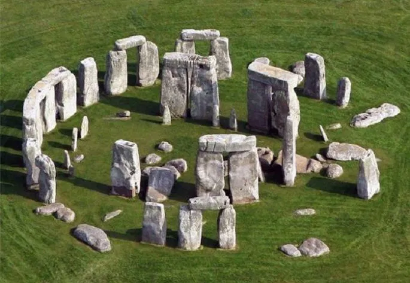
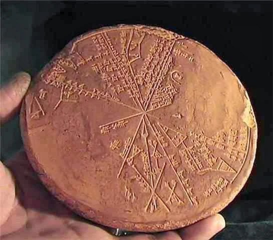
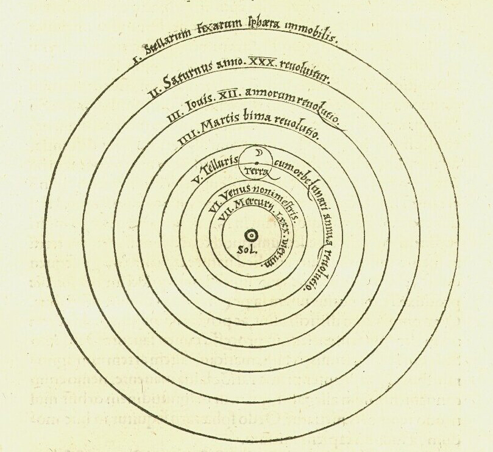
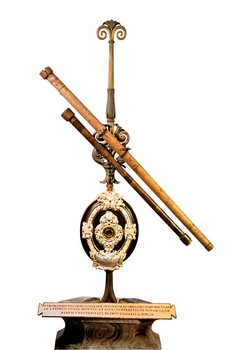

A Astronomia se trata da ciência que estuda os corpos celestes como estrelas, planetas, cometas, asteroides, satélites etc.
É considerada a mais antiga das ciências, tendo se originado nos primórdios da humanidade, com base na observação do comportamento dos corpos no céu.
Os povos antigos tinham o costume de observar o céu para perceberem os ciclos do Sol, da Lua e das estrelas, associando esses pequenos ciclos a fenômenos naturais terrestres, como épocas de chuva, secas, enchentes e o melhor momento para plantio e colheita.
História da Astronomia:
Surgida da curiosidade humana sobre a forma como os astros se comportam no céu, as observações astronômicas datam de milhares de anos antes da Era Comum, com povos egípcios que viviam na região de Assuã, onde fica o sítio de Nabta Playa. Lá foi construído um círculo de pedras utilizado para determinar a chegada do solstício de verão, sendo um dos primeiros registros físicos de como a posição dos astros e a sua interação com o planeta Terra eram importantes no cotidiano das civilizações antigas.
Estruturas tão importantes quanto a de Nabta Playa foram construídas no norte da Europa por volta do ano 3000 a.C., como o monumento de Stonehenge, em Wiltshire, na Inglaterra. Além do seu propósito religioso e espiritual, os círculos dessa construção eram utilizados na identificação do início e do término dos solstícios de inverno e de verão no Hemisfério Norte.

Monumento de Stonehenge:

Outros povos antigos, como babilônios e os assírios, foram também responsáveis por grandes contribuições à astronomia, algumas das quais identificadas em registros em tábuas de argila em escrita cuneiforme. As tábuas que foram preservadas se encontram hoje em exibição em museus, como o Museu Britânico, na Inglaterra.

Com o passar do tempo, gregos, chineses, árabes e indianos aperfeiçoaram a astronomia e fizeram a introdução de novas proposições e elementos (obtidos com base em cálculos matemáticos) a esse campo do conhecimento, imprimindo-lhe o caráter multidisciplinar que hoje exibe. Atribui-se aos gregos a sistematização da astronomia e do princípio de sua teorização, com destaque para nomes como Anaxímenes de Mileto, Pitágoras, Aristóteles, Hiparco e Ptolomeu.
As civilizações pré-colombianas nas Américas, como os incas, os maias e os astecas, além de manterem uma relação espiritual com os astros, guiavam-se por meio deles, e ainda possuíam monumentos com base nos quais observavam a passagem do tempo, as estações do ano (o que era importante para saber o momento mais adequado para o plantio e a colheita), e buscavam também representar os corpos celestes e um modelo de outros mundos e do Universo.
No século XVI, na Europa, os escritos de Nicolau Copérnico representaram um marco na ciência astronômica. O matemático polonês refutava a tese de Cláudio Ptolomeu de que o Sistema Solar era geocêntrico, ou seja, tinha a Terra em seu centro. Assim, Copérnico propôs o modelo heliocentrista, que dizia que o Sol era o centro do Sistema Solar, e era em torno dele que os planetas giravam.

Também no século XVI, o dinamarquês Tycho Brahe construiu um observatório astronômico em uma ilha próximo a Copenhague, ainda sem o auxílio de instrumentos como telescópios, conhecido pela acurácia de suas observações, como sobre a posição do planeta Marte. Contemporâneo a ele, John Kepler foi responsável pelos modelos que descreviam as órbitas dos planetas em torno do Sol, dos quais derivam as três leis de Kepler.
No século XVII, o italiano Galileu Galilei fez contribuições muito importantes para a astronomia e para a ciência como um todo. No campo astronômico, ele construiu seu próprio telescópio, por meio do qual realizou uma série de descobertas, como a de que estrelas formavam a Via Láctea, algumas das luas de Júpiter, manchas solares em Vênus e a irregularidade da superfície da Lua. Além disso, Galileu comprovou o modelo heliocêntrico de Copérnico.

O intervalo do século XVII ao XX foi marcado por grandes descobertas no campo da astronomia e da Física, com destaque para Isaac Newton, Edmund Halley, Albert Einstein e Edwin Hubble. O aperfeiçoamento técnico e o advento de novos instrumentos, a partir da segunda metade do século XX, permitiram observações mais precisas e a descoberta, por exemplo, da radiação cósmica de fundo em micro-ondas, prova fundamental da expansão do Universo.
No ano de 1969, uma missão da Nasa colocou os primeiros astronautas para andarem na superfície da Lua, feito realizado por Neil Armstrong e Edwin Aldrin. Quase seis décadas mais tarde, em 2022, foi lançada a missão Artemis, com o objetivo de repetir a caminhada lunar. As descobertas recentes proporcionadas pelo avanço tecnológico incluem a primeira imagem de um buraco negro, lançada pela Nasa em 2019, e o som que essas estruturas emitem, divulgado em 2022, demonstrando assim a constante evolução da ciência astronômica.
A astronomia e a astrologia são frequentemente confundidas e interpretadas como se fossem uma única ciência ou área do conhecimento. Não obstante tenham em comum a observação dos astros, elas não são equivalentes.
A astrologia, diferentemente da ciência astronômica, é comumente descrita como uma pseudociência e também como uma forma de linguagem ou de arte. Ela busca, ancorada na análise da posição e do movimento dos corpos celestes nos céus (estrelas e constelações, planetas, a Lua), determinar como esses astros influenciam na personalidade de um indivíduo e nos acontecimentos do dia a dia.
Talvez a principal questão científica da atualidade é se existe ou não vida fora da Terra. A resposta a essa pergunta mudaria a forma que enxergamos a nossa própria existência e por isso o assunto é tratado com muita cautela pelos cientistas.
Primeiro, é preciso dizer que até agora não temos nenhuma evidência de que existe vida (inteligente ou não) em outro lugar. Contudo, a descoberta dos chamados extremófilos abriu as portas para que pudéssemos imaginar que existe vida microbiana em outros lugares. Esses organismos conseguem viver em condições tão extremas (em vulcões, por exemplo), que a comunidade científica já acha plausível encontrar seres assim no espaço.
A matéria que conhecemos que compõe as estruturas dos planetas, astros, estrelas e todo o restante corresponde somente a 4% do universo. Cerca de 96% de tudo o que existe fora da Terra é ou matéria escura ou energia escura. Enquanto a primeira é uma massa que não conseguimos detectar em nenhuma região do espectro eletromagnético, a segunda é um composto com pressão negativa que atua no sentido contrário ao da gravidade e tem acelerado a expansão do cosmos nos últimos 5 bilhões de anos.
Diferentemente do que filmes como Star Wars sugerem, as batalhas entre naves espaciais não geram estrondosos sons de explosões. Aliás, não geram som nenhum porque o espaço é completamente silencioso. Essa é a realidade porque as ondas sonoras precisam de meios para se propagar. Como não há atmosfera no vácuo, o espaço é completamente silencioso. Por isso a ideia de se perder no espaço é tão aterrorizante, já que literalmente ninguém ouviria você gritar.
A água é um elemento essencial na concepção de vida como nós conhecemos. E ao contrário do que se pensava há algumas décadas, ela está presente em abundância fora da Terra. No caso, é uma água em estado sólido (basicamente gelo) em um formato diferente do que conhecemos por aqui.
De acordo com a NASA, existem zilhões de estrelas no universo. Já a Universidade Nacional da Austrália divulgou uma estimativa que fala em 70 septilhões, que significa esse número: 70.000.000.000.000.000.000.000.000 de estrelas.
Ao contrário do que muitos pensam um buraco negor não é apenas um buraco. Um buraco negro é uma região do espaço-tempo com uma gravidade tão intensa que nada, nem mesmo a luz, consegue escapar de sua atração. Formados pelo colapso de estrelas massivas, eles concentram imensa matéria em um ponto minúsculo, o que curva o espaço-tempo ao extremo.
Existem vários tipos de buracos negros. A massa é o que define a classificação de um buraco negro. Entre os principais tipos há os buracos negros ‘estelares’, que possuem massa entre 4 até 60 vezes a massa do nosso Sol. Já aqueles chamados de ‘intermediários’ têm massas solares na ordem de milhares de vezes a massa do Sol, enquanto os ‘supermassivos’ chegam a ter massas de 1 milhão a dezenas de bilhões de sóis.
Olhar para o passado: A luz do Sol leva cerca de 8 minutos para chegar à Terra, o que significa que vemos o Sol como ele era há 8 minutos.
O maior vulcão: O Monte Olimpo, em Marte, tem 21 km de altura, sendo quase três vezes mais alto que o Monte Everest.
Planetas Gasosos: Júpiter, Saturno, Urano e Netuno não possuem superfície sólida para pousar.
Velocidade do Vento: Em Netuno, ventos de metano congelado chegam a 2.000 km/h.
Lixo Espacial: Estima-se que existam pelo menos 500.000 peças de detritos orbitando a Terra.
Origem da Lua: Acredita-se que a Lua foi parte da Terra no passado, separando-se após um grande impacto.
Sentido de Rotação: Vênus e Urano giram no sentido contrário aos outros planetas (leste para oeste).
Buraco Negro: A primeira imagem de um buraco negro (M87*) mostra um objeto com 6,5 bilhões de vezes a massa do Sol.